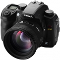
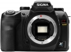
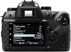
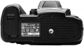

器材库 > APS及其以下画幅可换镜头数码相机 > SD15

规格总览
产品类型
APS画幅可换镜头数码相机
发布日期
2010-02-22
影像规格
影像传感器
Foveon X3
影像传感器尺寸
20.7 x 13.8mm
总像素
1445万
有效像素
1406万
影像处理器
TRUE II
最大解像度
2640 x 1760 x 3层
静态图像尺寸
[RAW] 2640×1760×3; [JPEG] 2640 x 1760 ; 1872×1248 ; 1312× 880
静态图像格式
JPEG, RAW
静态图像质量
优良，良好，标准
画幅比
3:2
镜头和对焦
镜头卡口
Sigma SA
兼容镜头
Sigma SA 卡口镜头群
对焦系统类型
TTL相位检测
对焦点
5点
对焦模式
单次AF、连续AF(附AF预测功能)、手动MF
AF辅助灯
有
手动对焦
支持
曝光控制
测光模式
中央重点测光, 多分区评价测光, 点测光
测光范围
1EV~20EV
曝光模式
P（程序自动曝光）, A（光圈优先自动曝光）, S（快门速度优先自动曝光）, M（手动测光曝光）
快门类型
电子控制，纵走式，焦平面快门
快门速度
1/4000 - 30秒，B门；闪光同步速度：1/180秒
曝光补偿
±3EV以1/3EV级调整
自动曝光锁
有
自动包围曝光
拍摄3张，以1/3EV级微调至±3EV；拍摄5张，以1/3EV级微调至±1.7EV
ISO感光度
100, 200, 400, 800, 1600, 自动, 可扩展至50-3200
白平衡
日光, 闪光灯, 阴天, 荧光灯, 自定义, 阴影, 自动, 钨丝灯
连拍
每秒3张，最多21张
闪光灯
内置闪光灯
弹出式
闪光指数
GN 11
闪光同步模式
前帘同步
取景器/显示屏
取景器
眼平五棱取景器
取景范围
98%
取景放大倍率
0.9倍
屈光度调节范围
-3.0 ~ +1.5
LCD类型
彩色TFT LCD
LCD尺寸
3.0英寸
LCD像素
46万
视野率
100%
Live View
无
文件输入/输出
存储卡
SD/SDHC, MMC
数据接口
USB2.0
视频/音频接口
Video 输出 (NTSC/PAL)
电源
电池
BP-21可充电锂电池
外接电源
AC交流电适配器（需另购）
机身规格
材质
金属
颜色
黑色
尺寸
144 × 107.3 × 80.5mm
重量
680g
其它
配件端口
热靴
支持语言
中文（简体）, 英语, 日语, 法语, 德语, 意大利语, 韩语, 俄语, 西班牙语
附件
锂电池组BP-21，电池充电器BC-21，USB线缆，视频线，相机带，眼盖，机身盖，接目镜盖，Sigma图片处理软件光盘，Sigma SD15说明书
软件
SIGMA Photo Pro 3.0
该产品暂无存档的网友点评
产品图 / 样片
配合SA 50/1.4

外观图

外观图

外观图
评测 / 相关文章
- 详细内容 （存档）
- 纯粹的相机 适马SD15测试报告 （存档）
- 试片 心情非常平静地拿到了SD15 （存档）
- ［试用］用X3机身拍IR （存档）
- ［试用］DIY：自己动手更换SD15的裂像屏 （存档）
- ［试用］玩SD的意外收获，尽情享受X3的色彩大餐 （存档）
- ［试用］DIY：适马SD机身改徕卡R口 （存档）
- ［试用］适马SD15改EF口 （存档）
- ［资讯］适马发布SD15最新固件ver 1.04 （存档）
- ［资讯］适马SD15固件升级至ver 1.03 （存档）
- ［资讯］适马SD15最新固件V.1.02 （存档）
- ［资讯］适马在CP+上展出多款相机和镜头新品 （存档）
- ［资讯］适马发布SD15最新固件Ver.1.01 （存档）